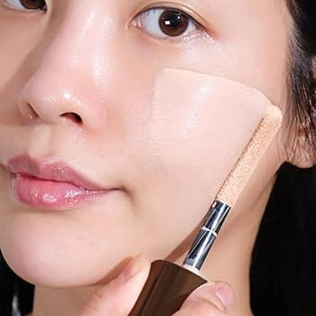
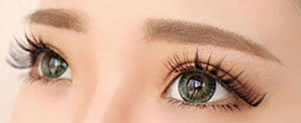
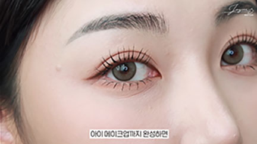
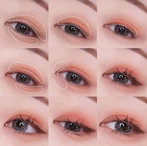
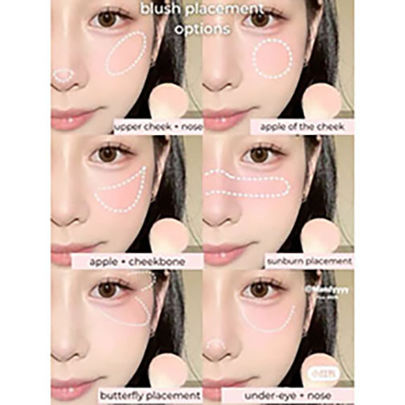
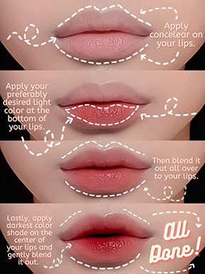

K-Beauty

What is K-Beauty?
Korean Beauty is all about having that natural makeup look. Which is why they emphasis the importance on skincare and preppping your face before putting any makeup on. It also became very popular around 2011 when bbcream was trending and now getting more popular due to Kpop culture.
The key to K-beauty is skincare!
How to Get The Look!
Foundation
Foundation
One important aspect of Korean Beauty is to have a flawless and glowing porcelain skin.
Your base has to be clean and perfect, by base I mean your skin. That way when putting on makeup your skin would look healthy and radiating. BBCream is popular to use since it hides your blemishes and hydrate your face. +-Semi-matte and matte is what people also love to do for the base of foundation.
Eyebrows
When drawing your eyebrows, it is most known to draw them straight. This way it gives off a childlike innocence look. It also allows us to appear more natural look instead of more feirce.
Eyes
For your eyes, you can use natural color or using light colors like pink. You can also put a little shimmer on your lids but not too much. For your eyeliner it is good to use a brown gel and make the line thin to make your shape of your eye as natural as possible. For you eyelashes it is good to pick long and natural looking lashes. It has also become a trend to draw aegyosals under your eyes to create an impression that you are youthful.
 Blush
When putting on blush, the color pink and orange are usually the go to. The reason for this is to give off a gentle look. You can also place them on the cheek in a circular motion on your cheeks.
Lips
Choosing berry colors or tints that are usually closer to your lip color also serves a purpose for a more natural and radiant look. It is very popular to have gradient lip tint on your lips to elevate youthfulness.
